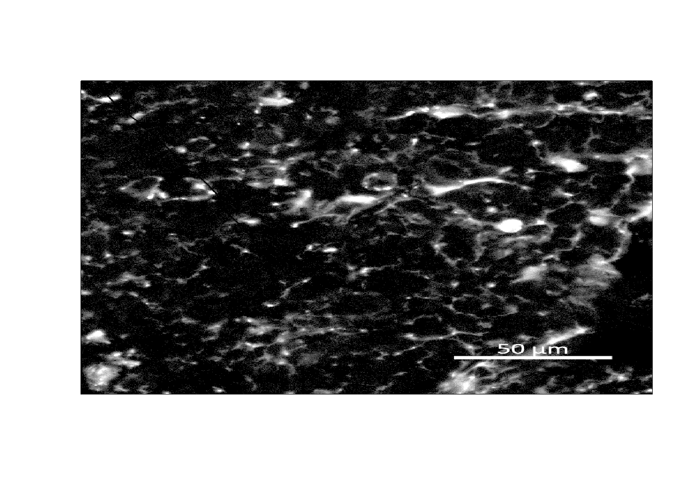

Workshop
File types, workflow tips and other tools
Introduction
Session overview
In this workshop you will
File types
Omics
gene/transcript/protein/metabolite expression
Images
img [,1] [,2] [,3] [,4] [,5] [,6]
[1,] 0 0 0 0 0 0
[2,] 0 0 0 0 0 0
[3,] 0 0 0 0 0 0
[4,] 0 0 0 0 0 0
[5,] 0 0 0 0 0 0
[6,] 0 0 0 0 0 0
── TIFF tags ───────────────────────────────────────────────────────────────────an image at least one and usually more matrices of numbers representing the intensity of light at each pixel in the image
the number of matrices depends on the number of ‘channels’ in the image
a channel is a colour in the image
a frame is a single image in a series of images
we might normally call this a multi-dimensional array: x and y coordinates of the pixels are 2 dimensions, the channel is the third dimension and time is the forth dimension
display(img)
Structure
Workflow tips
🎬 Start by making a new RStudio project (use the workflow from in the independent study). Add some files
multiple cursors
open a file/function or find a variable CONTROL+.
the command palette CONTROL+SHIFT+P
segmenting code CONTROL+SHIFT+R
to correct indentation CONTROL+i
to reformat code CONTROL+SHIFT+A Not perfect but corrects spacing, indentation, multiple commands on lines and assignment with
=to comment and uncomment lines CONTROL+SHIFT+C
Tools | Global options | Code | Display | Show margin
Tools | Global options | Code | Diagnostic | Provide R style diagnostics
Other tools
The command line
The command line - or shell - is a text interface for your computer. It’s a program that takes in commands, which it passes on to the computer’s operating system to run.
Windows PowerShell is a command-line in windows. It uses bash-like commands unlike the Command Prompt which uses dos commands (a sort of windows only language). You can open is by going to Start | Windows PowerShell or by searching for it in the search bar.
Terminal is the command line in Mac OS X. You can open it by going to Applications | Utilities | Terminal or by searching for it in the Spotlight search bar.
git bash. I used the bash shell that comes with Git
RStudio terminal
The RStudio terminal is a convenient interface to the shell without leaving RStudio. It is useful for running commands that are not available in R. For example, you can use it to run other programs like fasqc, git, ftp, ssh
Google Colab
Python
Differences between R and python
You’re finished!
🥳 Well Done! 🎉
Independent study following the workshop
The Code file
These contain all the code needed in the workshop even where it is not visible on the webpage.
The workshop.qmd file is the file I use to compile the practical. Qmd stands for Quarto markdown. It allows code and ordinary text to be interleaved to produce well-formatted reports including webpages. Right-click on the link and choose Save-As to download. You will be able to open the Qmd file in RStudio. Alternatively, View in Browser. Coding and thinking answers are marked with #---CODING ANSWER--- and #---THINKING ANSWER---
Pages made with R (R Core Team 2023), Quarto (Allaire et al. 2022), knitr (Xie 2022), kableExtra (Zhu 2021)